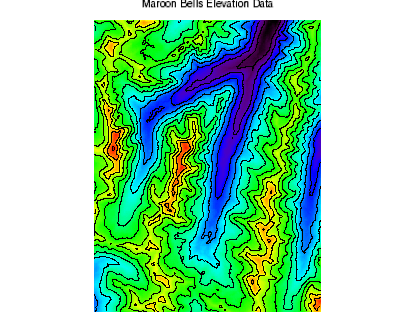

You can quickly display image data and overlay contour data over it, as shown in the example below. The IMAGE and CONTOUR functions allows you to quickly display images and contours, and define how you want them to appear. The example shown below displays elevation data as both an image and a contour.

The code shown below includes code comments (starting with a semicolon). The dollar sign ($) indicates a line continuation. You can copy the entire block and paste it into the IDL command line to run it.
RESTORE, FILEPATH('marbells.dat', $
SUBDIRECTORY=['examples', 'data'])
img = IMAGE(elev, RGB_TABLE=13, TITLE='Maroon Bells Elevation Data')
cntr = CONTOUR(elev, N_LEVELS=15, /OVERPLOT)